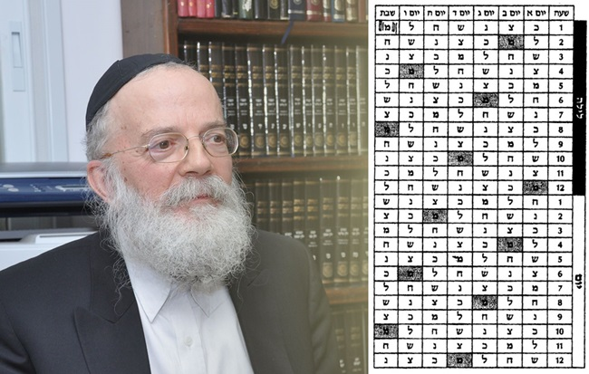

נוהגים שלא לקדש בשעה השביעית של ליל שבת, ולאחרונה דנו בנושא כמה מרבני אנ”ש שי’ ל
נוהגים שלא לקדש בשעה השביעית של ליל שבת, ולאחרונה דנו בנושא כמה מרבני אנ”ש שי’ לגבי פתח ואפשרות שכן אפשר לקדש * מהי השעה השביעית? מה המיוחד בה שנהוג שלא לקדש בה? וממתי אנו מתחשבים במזלות השמים? * על כך ועוד, במאמר שלפנינו
נוהגים שלא לקדש בשעה השביעית של ליל שבת, ולאחרונה דנו בנושא כמה מרבני אנ”ש שי’ לגבי פתח ואפשרות שכן אפשר לקדש * מהי השעה השביעית? מה המיוחד בה שנהוג שלא לקדש בה? וממתי אנו מתחשבים במזלות השמים? * על כך ועוד, במאמר שלפנינו
הרב שלום דובער הלוי וולפא
ראש כולל “מכון הרמב”ם השלם”
ביתר עלית

כפי הנראה, הספק נוצר מכך, שיש שקישרו את האיסור עם האדמומיות של מזל (כוכב) מאדים (שמפני שליטתו בשעה זו לכן אסור לקדש בה, וכדלקמן). אבל המעיין במקורות של האיסור - יראה בעליל, שאין לכך שום שייכות.
מכיון שהצבור נחשף לסוגיית “השעה השביעית”, ראוי בהזדמנות זו להסביר את הענין מעיקרו. מהן המזלות שעליהן מדובר? למה שולט מאדים דוקא בליל שבת בשעה השביעית? מהי ההשפעה של המזלות על העולם ועל עם ישראל? כיצד מחשבים את השעה השביעית? ועוד.
המקורות לאיסור
בשולחן ערוך אדמו”ר הזקן סימן רעא ס”ג: “יש נזהרים שלא לקדש בשעה ראשונה של הלילה [דהיינו שעה שביעית אחר חצות היום..]. אלא או קודם הלילה או לאחר שעה תוך הלילה. לפי שבשעה הראשונה הוא מזל מאדים וסמא”ל מושל עליו”.
ומקורו ב”מגן אברהם” שם סק”א בשם ה”תקוני שבת” (מתלמידי האר”י. והוספנו בסוגריים מלשון התקוני שבת): “שיקדש קודם לילה, כי בתחלת ליל שבת הוא מזל מאדים [וס”מ מושל עליו], ובסוף יום ו’ הוא מזל צדק [ומלאכו צדקיאל]. לכן יקדש בצדק [או ימתין עד שיעבור ממשלת מאדים, ויקדש]”.
והוסיף ב”עולת שבת”: “והנה טוב שלא יקבל את השבת בקידוש בממשלת הרע רק בממשלת הטוב, והרע בעל כרחו יענה אמן”. ומקורו בשו”ת מהרי”ל סימן קנב: ”שני מלאכים המלווין לאדם בליל שבת, אחד טוב ואחד רע (שבת קיט, ב). ושמעתי הטעם מפי מורי.. דהיינו לפי סדר שצ”מ חנכ”ל, צדק יוצא ומאדים נכנס, והן הן אחד טוב ואחד היפך”.
מזלות שצ”מ חנכ”ל. מה זה?
להבנת ענין זה, נקדים לשון רש”י שבת קכט, ב, שכתב אודות שבעת המזלות (והוספנו קצת ביאור בסוגרים):
“שצ”מ חנכ”ל (ר”ת: שבתי, צדק, מאדים, חמה, נוגה, כוכב, לבנה) סדר השעות. כשנתלו המאורות והמזלות (בבריאת העולם) שעה ראשונה של רביעי בשבת (היינו ליל רביעי, תחילת שעה שביעית מחצות יום שלישי) שימש שבתאי, ובשניה צדק, ואחריו מאדים, ואחריו חמה, ואחריו נוגה, ואחריו כוכב, ואחריו לבנה, נמצאו שבע המזלות לשבע השעות, וחוזרים חלילה לעולם (שהרי בשבוע יש 7 ימים, שהם 168 שעות. ואם כן 7 המזלות משמשים כל אחד 24 מחזורים בשבוע בדיוק, וחוזרים אחרי שבוע לזמן ששימשו בו בתחילת המחזור כשנתלו המאורות).
“נמצא בסדר זה לעולם סימני מזלות המשמשין בתחלת לילי השבוע: כצנ”ש חל”ם, מוצאי שבת - שעה ראשונה שלו כוכב, תחלת ליל שני - צדק.. וסדר תחלת סימני הימים: חל”ם כצנ”ש: שעה א’ של אחד בשבת - חמה, ושל שני בשבת - לבנה, ושל שלישי בשבת - מאדים”.
וכן הוא בפירש”י ברכות נט, ב שסוקר את סדר המזלות ושעתן, ומציין “..תחלת ליל שבת - מאדים” (וראה שם באריכות).
וביאר יותר בשו”ת “חתם סופר” קובץ תשובות סימן כו:
”..ז’ הכוכבים האלו נקראו כוכבי לכת על מהירת תנועתם על שארי כוכבים, ולהם ניתן כוח ושרות בעולם לדברים ידועים, וכל אחד שולט בשעה אחת מן היום, וחוזר חלילה עד לעולם. ואף על פי שיש לו שרות על שעה שלו, מכל מקום בכל יום יש שליטה יתירה לאותו כוכב שתחלת היום היה בממשלתו, וכן הלילה. וכן יהיה בכל חודש, באיזה שעה שתהיה מולד הלבנה, יהיה ממשלה יתירה לאותו הכוכב. וכן למי שנולד בשעה מן השעות ויום מן הימים וחדש מן החדשים..
“כשנתלו המאורות והתחילו להתגלגל, תחילת ליל רביעי היה, היינו באורתא דיום שלישי נגהי ד’, והתחילו לשמש כסדרן שצ”מ חנכ”ל. נמצא שבתאי תחילת ליל ד’, וחזרו חלילה עד שבא כוכב לתחלת ליל מוצאי שבת קודש (היינו שעה ראשונה של ליל יום א’), ועל דרך זה תהיה לעולם סדר לילה השבוע, סימן כצנ”ש חל”מ: מוצאי שבת כוכב, ליל א’ בשבת צדק, וכן כולם, עד שתהי’ תחילת ליל שבת קודש מאדים. וסימן הימים (שעה ראשונה של היום) חל”מ כצנ”ש, ג”כ כנ”ל”.
השעה השביעית
מכל הנ”ל מובן, שמדי שבוע בכל ליל שבת, בשעה הראשונה של הלילה (שהיא השעה השביעית מחצות יום ששי), המזל המשמש בעולם הוא מאדים, וכפי שנראה בטבלה (במשבצת השמאלית ביותר בשורה העליונה):
ולכן אין לעשות אז קידוש “לפי שבשעה הראשונה הוא מזל מאדים וסמא”ל מושל עליו” (ובלשון רש”י שם בתחלת דבריו, ש”מזל מאדים ממונה על החרב ועל הדבר ועל הפורעניות”). “דהיינו לפי סדר שצ”מ חנכ”ל, צדק יוצא ומאדים נכנס”. “והן הן אחד טוב ואחד היפך”. “והנה טוב שלא יקבל את השבת בקידוש בממשלת הרע”. מה שאין כן “בסוף יום ו’ הוא מזל צדק ומלאכו צדקיאל. לכן יקדש בצדק”. “או ימתין עד שיעבור ממשלת מאדים, ויקדש” (במזל חמה, כפי מנהגנו), “והרע בעל כרחו יענה אמן”.
איך מחשבים מתי מתחילה השעה השביעית
לענין חישוב השעות, צריך לידע כמה כללים חשובים:
1) ששימוש המזלות מתחלק לפי שעה של 60 דקות ולא לפי שעות זמניות.
2) שסוף שעה ששית ותחילת שעה שביעית הוא בחצות האמצעי, כלומר שעת חצות המתקבלת לפי 6 שעות של 60 דקות.
3) שמה שרגילים בכלל לקרוא לשעה 12:00 בשם חצות היום והלילה, הוא רק באופק קהיר (כי באופק זה מתחיל קטע חדש של 15 מעלות אורך בכדור הארץ, שכל 15 מעלות זזים בשעה אחת). וזמן חצות שם הוא ב–12:00 שהוא הממוצע השנתי של חצות האמיתי בכל השנה באופק קהיר, שהוא במעלת אורך 30*), אבל בארץ ישראל הנמצאת מזרחה לקהיר במעלת אורך 35*, הרי חצות הוא כ–20 דקות לפני קהיר, ולכן השעה השביעית מתחילה בערך בשעה 17:40.
וראה באגרות קודש חלק י”ב ע’ רכו:
“במ”ש אודות הזהירות שלא לקדש משעה 6–7 בערב שבת. הנה מובן שהכוונה לשעה בת ששים רגעים. כי הילוך המזלות שוה הוא בקיץ ובחורף. וגם בחצות היום אין חילוק בין המקומות שבדרום ובצפון. ובמילא שעה הששית היינו שש שעות שוות לאחר חצות היום”.
וכ”כ הרש”ש עירובין נו, א:
“הסכמת התוכנים לחשוב ששה שעות בינונית [היינו שכל שעה היא חלק א’ מכ”ד במעל”ע] קודם חצי היום, וכן ו’ שעות בינונית שאחריו ליום אף בתקופת טבת, וכן משם והלאה ללילה אף בתקופת תמוז”.
ובלקוטי שיחות חט”ז ע’ 576:
“לכאורה היה צריך להיות שש שעות אחר חצות האמיתי (האמצע בין נץ החמה ושקיעת החמה) - דלכאורה קל לאדם לדעתו, כשהחמה בראשו. והכוונה ע”פ מה שראיתי נוהגין - שש שעות אחר חצות האמצעי”.